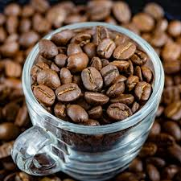
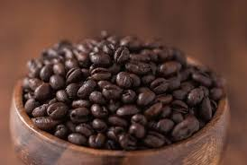
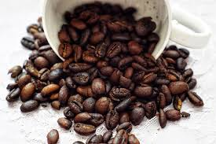
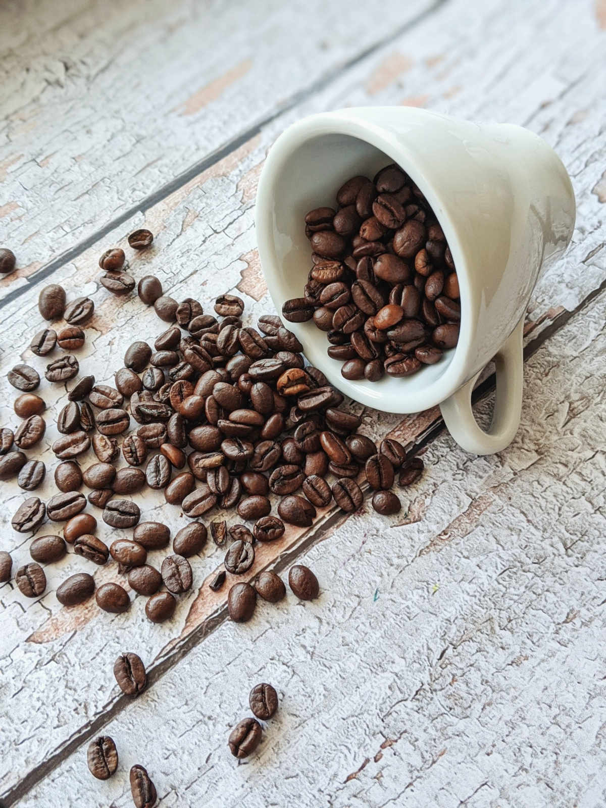

Every great cup of coffee starts with the right bean. Let’s explore the
main types and what makes each unique.
Arabica (Coffea arabica)

Arabica beans
Arabica beans— oval shape with a curved crease, are prized for
their smooth, aromatic flavor and natural sweetness. They grow
best at high altitudes in cooler climates like Ethiopia, Colombia,
and Kenya.
Flavor notes: Sweet, fruity, floral
Caffeine: Lower than Robusta
Preferred for: Special and high-end blends
Robusta (Coffea canephora)

Robusta beans
Robusta beans— rounder shape with a straight crease, are more
bitter and contain nearly twice the caffeine of Arabica. They
thrive in warmer, lower-altitude regions and are common in instant
coffee and espresso blends.
Flavor notes: Earthy, strong, nutty
Caffeine: Higher than Arabica
Preferred for: Espresso and instant coffee
Liberica (Coffea liberica)

Liberica beans
Liberica beans— larger and more irregular in shape, are known for
their unique smoky, floral aroma and bold flavor. They are less
common globally but cultivated in parts of the Philippines and
Malaysia.
Flavor notes: Smoky, floral, fruity
Caffeine: Moderate
Preferred for: Unique single-origin coffees
Excelsa (Coffea excelsa)

Excelsa beans
Excelsa beans— often classified as a variety of Liberica, are
known for their tart, fruity flavor with a dark, mysterious
profile. They are primarily grown in Southeast Asia and are used
to add complexity to blends.